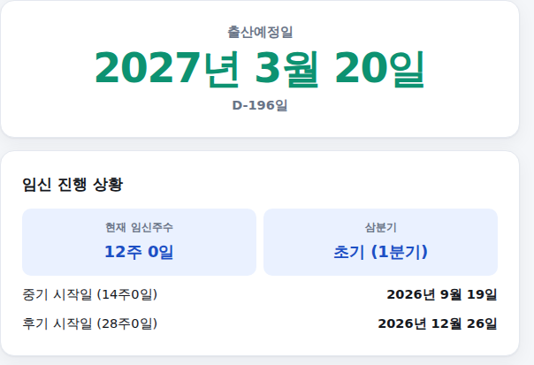

임신 사실을 확인하면 가장 먼저 궁금한 게 "그래서 언제 낳는데?"입니다. 마지막 생리 시작일만 넣으면 출산예정일과 현재 임신주수, 삼분기까지 한 번에 계산해주는 계산기를 만들었습니다. 쓰는 법은 아래와 같습니다.
-
마지막 생리 시작일, 생리주기, 기준일 입력
마지막 생리가 시작된 날짜를 넣어주세요. 평소 생리주기는 28일이 기본이고, 다르다면 칩을 눌러 바꿀 수 있습니다. 기준일은 오늘 날짜가 기본으로 들어가 있는데, 특정 날짜 기준 임신주수가 궁금하면 바꿔보세요.
정보 입력 화면
-
결과 확인 — 출산예정일과 임신 진행 상황
맨 위에 출산예정일과 D-day가 크게 나오고, 아래에서 현재 임신주수와 삼분기(초기·중기·후기), 중기·후기가 시작되는 날짜까지 확인할 수 있습니다.

결과 화면
계산 기준 — 네겔레 법칙
출산예정일은 네겔레 법칙(Naegele's Rule)에 따라 마지막 생리 시작일에 280일(40주)을 더해 계산합니다. 실제 배란·수정은 생리 시작 후 약 2주 뒤 일어나지만, 의학적으로 임신주수는 관례상 마지막 생리 시작일부터 셉니다. 평소 생리주기가 28일이 아니라면, 그 차이만큼 예정일과 임신주수를 함께 보정해서 계산해드립니다.
이 계산은 추정치입니다
실제로 예정일 당일 출산하는 경우는 통계적으로 약 5%에 불과하고, 대부분 예정일 전후 1~2주 사이에 출산합니다. 생리주기가 불규칙하다면 이 계산의 정확도가 떨어질 수 있어, 산부인과 초음파로 확인한 예정일을 우선하는 것이 좋습니다.
계산은 참고용이며 의학적 진단이 아닙니다. 기준: 네겔레 법칙(LMP+280일), 2026년 기준 정리.